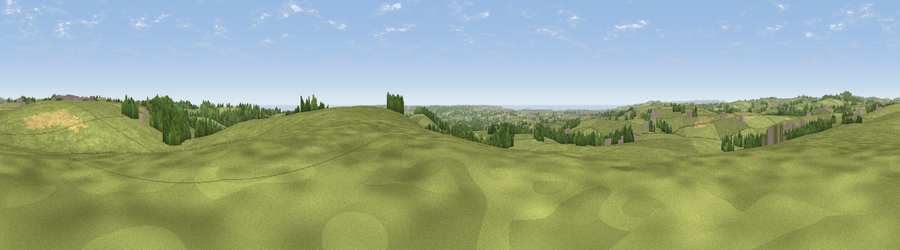

Viewpoint near Seworgan
#15134 in England · top 34% of its area beats it · near SeworganWhere it is
The exact computed spot (SW 71575 31375). Click the marker for map links.
The view, rendered

A 360° render of this exact spot computed from the terrain model, tree cover and land cover — summer colours, afternoon light, calibrated against photographs of famous viewpoints. Real trees, hedges and buildings will differ in detail.
The panorama
Grey silhouette: terrain skyline in each direction (720 bearings, Earth curvature and refraction included). Dashed green: skyline with trees (+15 m) and buildings (+8 m) as obstacles. Blue strip: how far the ground is visible on each bearing.
Where the view opens
Wedge length = distance to the farthest visible ground on that bearing (vegetation-aware). Rings at 10, 25 and 50 km.
What fills the view
80% grassland · 8% woodland · 8% cropland · 3% water · 1% built-up
Angular shares of the visible panorama (visual magnitude), not map area. Landscape diversity 0.33 (0–1 Shannon).
Key numbers
More beautiful places nearby
The staircase of upgrades: each row has a higher view potential than everything closer. Driving times are estimates from straight-line distance, calibrated against real road routing — check an actual route before setting out.
| Place | Direction | Drive | Score |
|---|---|---|---|
| Viewpoint near Seworgan | SE · 0 km | ~2 min | 67.1 |
| Viewpoint near Mabe Burnthouse | ENE · 5 km | ~11 min | 71.9 |
| Viewpoint near Four Lanes | NNW · 9 km | ~17 min | 74.3 |
| Viewpoint near Lanner | N · 9 km | ~18 min | 74.5 |
| Carn Brea | NNW · 10 km | ~19 min | 81.1 |
| Viewpoint near Ashton | WSW · 11 km | ~21 min | 81.3 |
| Tregonning Hill | W · 12 km | ~22 min | 83.0 |
| St Agnes Beacon | N · 19 km | ~32 min | 86.1 |
50.13836, -5.19804 · source: screening · position refined by local search. Computed location — check access rights before visiting.